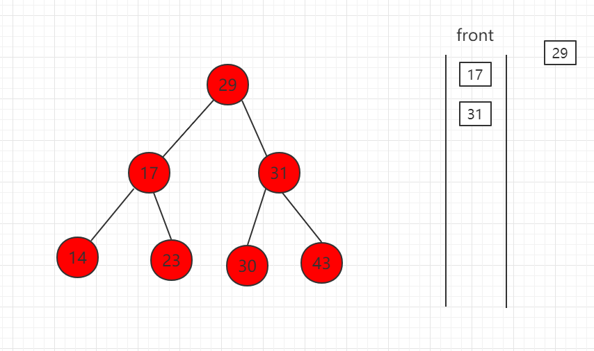
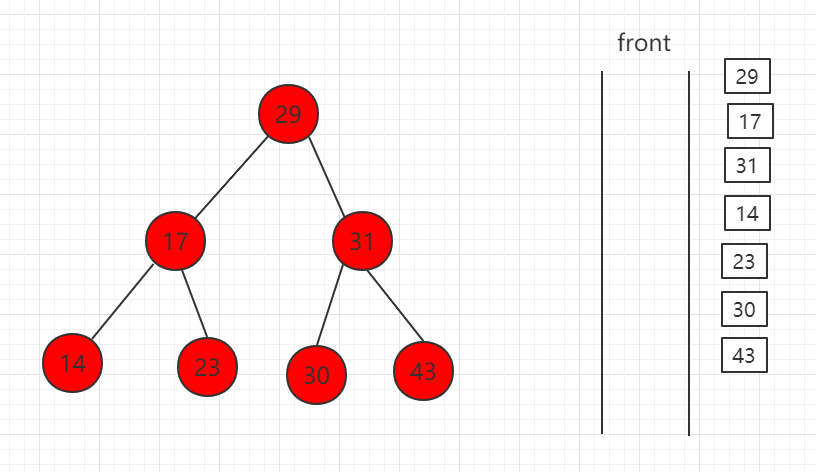

Binary search tree level-order traversal
Level-order traversal of a binary search tree, that is, traversing level by level, storing the nodes of each level in a queue, then performing dequeue (taking out nodes) and enqueue (storing nodes of the next level) operations to achieve the purpose of traversal.
By introducing a queue to support level-order traversal:
-
If the root node is empty, there is nothing to traverse;
-
If the root node is not empty:
-
First enqueue the root node;
-
As long as the queue is not empty:
- Dequeue the front node of the queue, and traverse it;
- If the front node of the queue has a left child, enqueue the left child;
- If the front node of the queue has a right child, enqueue the right child;
-
The following steps are demonstrated in sequence:
（1）First take out the root node and put it into the queue

（2）Take out 29, enqueue the left and right child nodes

（3）The front node 17 is dequeued, and its child nodes 14 and 23 are enqueued.

（4）31 is dequeued, and its child nodes 30 and 43 are enqueued.

（5）Finally, dequeue all

Core code example:// Level-order traversal of the binary search tree
public void levelOrder(){
// We use LinkedList as our queue
LinkedList<Node> q = new LinkedList<Node>();
q.add(root);
while( !q.isEmpty() ){
Node node = q.remove();
System.out.println(node.key);
if( node.left != null )
q.add( node.left );
if( node.right != null )
q.add( node.right );
}
}
...
Java example code
Source code package download:Download
src/example/binary/LevelTraverse.java file code:
import java.util.LinkedList;
/**
* Level-order traversal
*/
public class LevelTraverse<Key extends Comparable<Key>, Value>{
// The nodes in the tree are a private class; the outside world does not need to know the specific implementation of the binary search tree nodes
private class Node {
private Key key;
private Value value;
private Node left, right;
public Node(Key key, Value value) {
this.key = key;
this.value = value;
left = right = null;
}
}
private Node root; // Root node
private int count; // Number of nodes in the tree
// Constructor, constructs an empty binary search tree by default
public LevelTraverse() {
root = null;
count = 0;
}
// Return the number of nodes in the binary search tree
public int size() {
return count;
}
// Return whether the binary search tree is empty
public boolean isEmpty() {
return count == 0;
}
// Insert a new (key, value) data pair into the binary search tree
public void insert(Key key, Value value){
root = insert(root, key, value);
}
// Check whether the key exists in the binary search tree
public boolean contain(Key key){
return contain(root, key);
}
// Search the binary search tree for the value corresponding to the key. If the value does not exist, return null
public Value search(Key key){
return search( root , key );
}
// Preorder traversal of the binary search tree
public void preOrder(){
preOrder(root);
}
// Inorder traversal of the binary search tree
public void inOrder(){
inOrder(root);
}
// Postorder traversal of the binary search tree
public void postOrder(){
postOrder(root);
}
// Level-order traversal of the binary search tree
public void levelOrder(){
// We use LinkedList as our queue
LinkedList<Node> q = new LinkedList<Node>();
q.add(root);
while( !q.isEmpty() ){
Node node = q.remove();
System.out.println(node.key);
if( node.left != null )
q.add( node.left );
if( node.right != null )
q.add( node.right );
}
}
//********************
//* Helper functions for the binary search tree
//********************
// Insert node (key, value) into the binary search tree rooted at node, using recursive algorithm
// Return the root of the binary search tree after inserting the new node
private Node insert(Node node, Key key, Value value){
if( node == null ){
count ++;
return new Node(key, value);
}
if( key.compareTo(node.key) == 0 )
node.value = value;
else if( key.compareTo(node.key) < 0 )
node.left = insert( node.left , key, value);
else // key > node->key
node.right = insert( node.right, key, value);
return node;
}
// Check whether the binary search tree rooted at node contains a node with key value key, using recursive algorithm
private boolean contain(Node node, Key key){
if( node == null )
return false;
if( key.compareTo(node.key) == 0 )
return true;
else if( key.compareTo(node.key) < 0 )
return contain( node.left , key );
else // key > node->key
return contain( node.right , key );
}
// Find the value corresponding to key in the binary search tree rooted at node, recursive algorithm
// Return NULL if the value does not exist
private Value search(Node node, Key key){
if( node == null )
return null;
if( key.compareTo(node.key) == 0 )
return node.value;
else if( key.compareTo(node.key) < 0 )
return search( node.left , key );
else // key > node->key
return search( node.right, key );
}
// Perform preorder traversal on the binary search tree rooted at node, recursive algorithm
private void preOrder(Node node){
if( node != null ){
System.out.println(node.key);
preOrder(node.left);
preOrder(node.right);
}
}
// Perform inorder traversal on the binary search tree rooted at node, recursive algorithm
private void inOrder(Node node){
if( node != null ){
inOrder(node.left);
System.out.println(node.key);
inOrder(node.right);
}
}
// Perform postorder traversal on the binary search tree rooted at node, recursive algorithm
private void postOrder(Node node){
if( node != null ){
postOrder(node.left);
postOrder(node.right);
System.out.println(node.key);
}
}
}